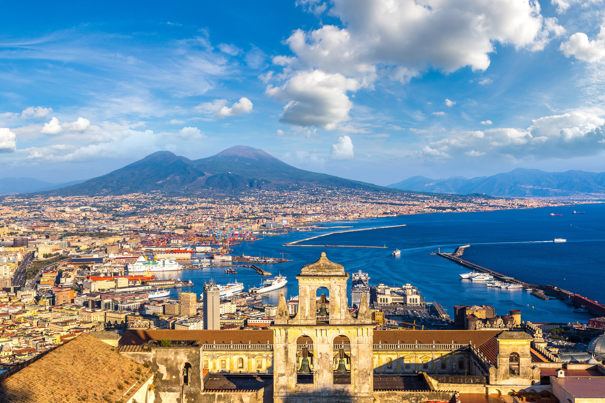
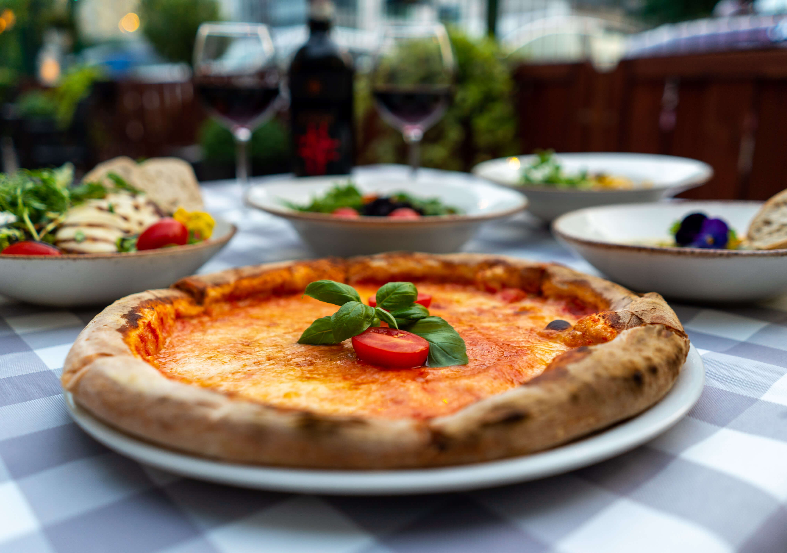
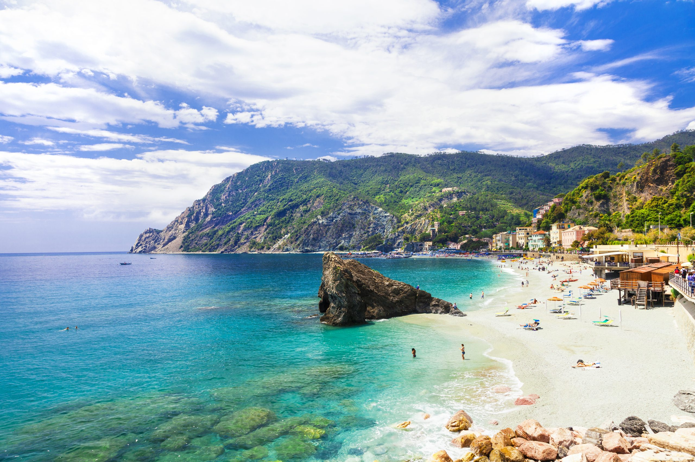
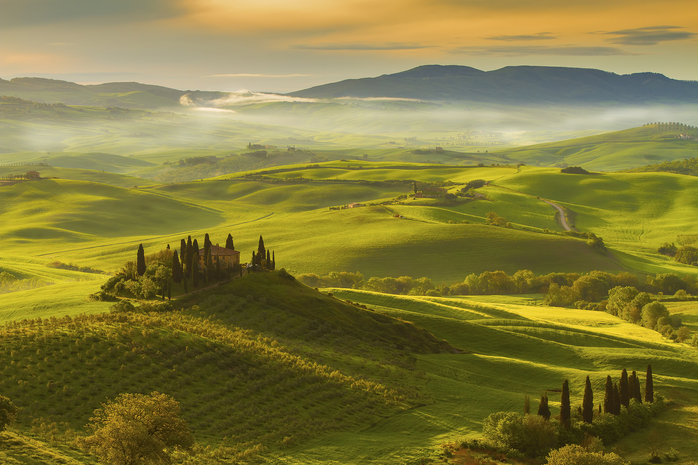

Włochy to nie tylko kraj - to prawdziwy ideał życia, gdzie pasja i spokój łączą się w harmonijną całość. To miejsce, gdzie codzienność nabiera smaku i koloru, a każdy moment jest okazją do celebracji. Spacerując po uliczkach starych miasteczek, można podziwiać zapierające dech w piersiach zabytki, takie jak rzymskie amfiteatry, gotyckie katedry czy renesansowe pałace, które przypominają o wielkości imperium i geniuszu renesansowych mistrzów.

Ale Włochy to nie tylko sztuka i historia. To również kuchnia, która jest sercem i duszą tego kraju. Tutaj jedzenie to sztuka, a każdy posiłek to wydarzenie. Smakujesz prawdziwego włoskiego makaronu z pomidorami, oliwą z oliwek i świeżymi ziołami, a od razu czujesz się jak u matki w domu. Wędrując przez uliczki, nie sposób nie zatrzymać się przy kawiarni, gdzie zapach świeżo parzonej kawy miesza się z nutką słodyczy cannoli czy tiramisu. Włoska kuchnia to nie tylko jedzenie, to ceremonia, to rodzinne spotkania wokół stołu, to radość z życia.

Włochy to również przepiękne plaże, które kuszą turystów błękitem morza i złocistym piaskiem. Na Sardynii czy Sycylii można znaleźć ustronne zatoczki, gdzie czas płynie wolniej, a tylko szum fal przerywa błogie lenistwo. Wiosną i latem, wybrzeża Amalfi, z ich skalistymi klifami i malowniczymi miasteczkami, przyciągają miłośników podróży szukających ucieczki od codzienności.

Jednak to nie wszystko, co Włochy mają do zaoferowania. To także krajobrazy Toskanii, gdzie wzgórza porośnięte winnicami i cyprysami malują obraz prawdziwej włoskiej sielanki. To góry Dolomitów, gdzie miłośnicy sportów zimowych znajdą swoje rajskie miejsce. To niezliczone festiwale, targi i imprezy, które odbywają się przez cały rok, łącząc lokalną społeczność i przybyszów z całego świata w jednym wspólnym święcie kultury.

Włochy to kraina, która urzeka swoją różnorodnością i pięknem. Niezależnie od tego, czy jesteś miłośnikiem sztuki i historii, czy też poszukujesz relaksu na plaży czy w górach, Włochy zawsze przyjmą Cię otwartymi ramionami i obdarzą niezapomnianymi doświadczeniami. Buon viaggio!

Miasta, które warto odwiedzić
Mediolan
Mediolan to miasto mody, designu i przepychu. Jednak to nie tylko centrum handlu czy światowej sławy boutiques. To także skarbnica kultury i historii. Zaczynamy naszą podróż od słynnej Katedry w Mediolanie, majestatycznego gotyckiego arcydzieła, które zachwyca swym rozmachem i detalem. Następnie udajemy się do Galerii Vittorio Emanuele II, gdzie nie tylko możemy podziwiać szklane sklepienia i eleganckie butiki, ale także zrobić obowiązkowe zdjęcie przy rzeźbie byka - symbolu szczęścia. Na koniec nie możemy zapomnieć o Cenacolo Vinciano, czyli Ostatniej Wieczerzy Leonarda da Vinci, której replikę możemy zobaczyć w opactwie Santa Maria delle Grazie.
Rzym
Rzym to Wieczne Miasto, pełne historii i legend. Podczas wizyty koniecznie odwiedź Koloseum, gdzie możesz przenieść się w czasie do starożytnego Rzymu. Następnie zobacz Panteon, budowlę z czasów rzymskich, której kopuła zachwyca precyzją wykonania. Na koniec koniecznie udaj się do Watykanu, aby podziwiać bazylikę świętego Piotra, mekkę dla wiernych z całego świata.
Florencja
W sercu Toskanii czeka na nas miasto sztuki, piękna i renesansowej harmonii - Florencja. Naszą podróż rozpoczynamy od Galerii Uffizi, gdzie możemy podziwiać dzieła takich mistrzów jak Botticelli, Leonardo da Vinci czy Rafael. Następnie udajemy się do Katedry Santa Maria del Fiore, słynnej z imponującej kopuły projektu Brunelleschiego oraz pięknych fresków w jej wnętrzu. Na koniec czas na spacer po Ponte Vecchio, najstarszym moście we Florencji, którym kiedyś handlowali jubilerzy i złotnicy.
Wenecja
Przenosimy się do miasta zakochanych - Wenecji, gdzie ulice są kanałami, a łodzie zastępują samochody. Nasza podróż rozpoczyna się od Placu Świętego Marka, serca miasta, gdzie możemy podziwiać Bazylikę Świętego Marka i Pałac Dożów. Następnie warto udać się do Wyspy Murano, słynącej z wyrobów szklarskich i warsztatów, gdzie można zobaczyć mistrzów w pracy nad szklanymi dziełami. Na koniec nie możemy zapomnieć o Wyspie Burano, gdzie kolorowe domki tworzą niezwykły krajobraz.
Neapol
Nasza podróż kończy się w słonecznej Neapolu, stolicy Kampanii i prawdziwym raju dla miłośników kulinariów. Rozpoczynamy od Pompejów, gdzie możemy przenieść się w czasie i odkryć miasto zachowane pod popiołem po erupcji Wezuwiusza. Następnie warto udać się do Wulkanu Wezuwiusz, by podziwiać jego potężną sylwetkę i przepiękne widoki na Zatokę Neapolitańską. Na koniec nie można zapomnieć o Castel dell'Ovo, średniowiecznej warowni na wysepce, skąd rozciąga się niezapomniany widok na miasto.